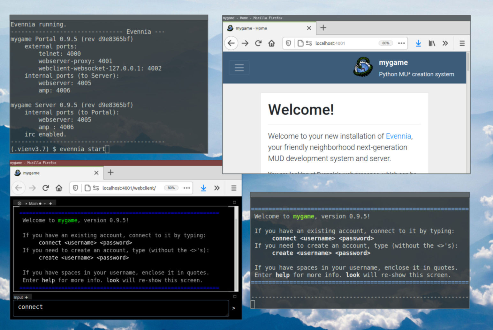
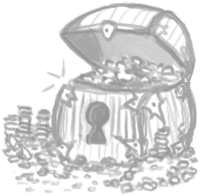

Evennia
The Python MU* Development Library
Latest events
Evennia MUD/MU* Creation System


Evennia is an open-source Python-based framework, codebase and server for creating text-based multiplayer online games (aka MUD/MU* etc) using modern technologies and tools.
Live demo
https://demo.evennia.com hosts an almost default Evennia server with some extra examples. Use it to get a taste for what's possible. You can also send questions to our support channel directly from inside the demo - just write public Hello! to say hi!
Installation
Evennia is installed by cloning and installing its repo from github. The Getting Started instructions will help you get things set up. Once installed, creating your new game is quick:
evennia --init mygame
cd mygame
evennia start
localhost, port 4000.

Overview
- A toolbox and framework: Evennia is intended for game developers who want to make a game uniquely theirs. But it's also easy enough to be a popular tool for quick game prototyping and for those who want an educational project for learning Python.
- Game agnostic: Evennia does not prescribe a genre, game rules, skills, classes, combat system or other things that will be specific for your game anyway.
- Optionally a little less unique: We have a growing library of commonly needed code-snippets and bigger game systems that you can choose to build from, copy or be inspired by.
- What we do: Evennia takes care of all the gritty networking, database-handling and other boring details that all online games need. The idea is to allow you, the game developer, to focus on designing your game's systems and content.
- Modern workflow: Coding in Evennia is primarily done by normal Python modules and classes, making the codebase extremely flexible - you don't tweak the library itself, you just override the defaults and tell Evennia where to find your changes. For experienced developers, not relying on some custom in-game scripting language means you can use modern development tools, version control and workflows. A lot of help: Evennia's code is heavily documented should you want to dive in. We have also spent a lot of time on our extensive documentation. Finally, our active and friendly developer community is always there to help you if you get stuck!
Default Content
Whereas your Evennia game starts out with no game-specific content, it's not empty! Out of the box you get a 'talker'-style game with basic functionality: You can create rooms and items, pick up stuff, talk to people, walk around, do light roleplay with emotes ... this starting point is easy to extend or completely replace as you prefer.
Here are some of the default resources and tools available out of the box:
- Classes for persistent objects, exits, rooms and characters.
- Separation between character and their accounts (multi-character play, if desired).
- In-game channels and chats (including linking to external chat channels).
- Some 90 commands for administration, building, chatting, basic roleplay etc.
- Available commands and even their function can vary with circumstance and game state.
- Delays, tickers, timers (fully asynchronous, no threading so no risk of race conditions).
- In-game menu-creation system.
- Prototype system, for making variations of objects (like monsters or items) without new classes.
- Lock and access mini-language for very flexible access control.
- Tutorial-world with examples.
- Easy storage of custom data on all game objects.
- Search, creation, and a large number of coding utilities.
- A
contrib/folder with optional full systems and shorter snippets.
Technical features
- Uses Python 3.7+, Django and Twisted frameworks
- HTML5 webclient (websocket with ajax/comet fallback)
- Website via own webserver (HTTP, HTTPS with external proxy)
- Telnet, Telnet+SSL, SSH
- MUD-specific telnet protocols (Webclient uses custom JSON protocol instead):
- GMCP and MSDP out-of-band protocols
- MXP (inline links only)
- ANSI and XTerm256 color support
- MSSP status for websites tracking MUDs
- NAWS, TTYPE, MCCP etc ...
- In-Game channels can link to IRC, Grapevine
- RSS feed, Twitter feed (with snippet from docs)
- Different databases supported via Django: Sqlite3, PostgreSQL, MySQL ...
- Asynchronous, event-driven architecture without risk of race-conditions
- Reload server without disconnecting players
- Extendable protocols for adding custom integrations
- BSD open-source license
More Information
If this piqued your interest, there is a lengthier introduction to Evennia to read.
To learn how to get your hands on the code base, the Getting Started page is the way to go. Otherwise you could browse the Documentation or why not come join one of the Evennia's community's chat channels or forums. Welcome!